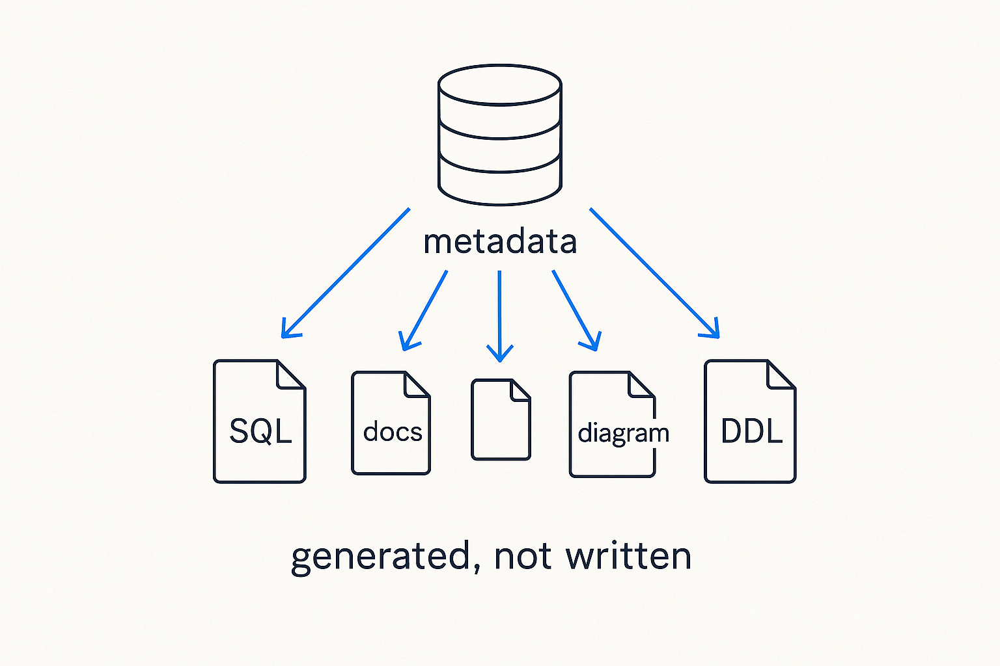

Every platform artifact — DDL, SQL, dbt, pipelines, docs, diagrams — is a generated view of the metadata. Change the metadata and the artifacts change; they can't drift, because they're all views of one source.

> Every platform artifact — DDL, SQL, dbt, pipelines, docs, diagrams — is a generated view of the metadata. Change the metadata and the artifacts change; they can't drift, because they're all views of one source.
This is the payoff of treating structure and logic as data: the platform’s artifacts are not authored by hand, they are *generated* from the metadata. The DDL, the SQL, the dbt models, the pipelines, the documentation, the diagrams — each is a view of the same source. Change the metadata and every artifact changes with it. Nothing is transcribed, so nothing can quietly fall out of sync.
The word that matters is deterministic: the same metadata produces the same SQL, every time, byte for byte. That is what makes generation trustworthy rather than a party trick — you can regenerate the whole platform and know exactly what you’ll get. And because docs and lineage are generated too, the documentation is always current: a metadata framework whose own documentation is hand-maintained would be a contradiction, so this one generates its own.
It also inverts the usual relationship with drift. In most platforms, SQL, docs, tests and diagrams are separate things kept aligned by manual effort that teams eventually stop supplying. Here alignment isn’t maintained, it’s inherited — an artifact can’t drift from the metadata for the same reason a shadow can’t drift from the object casting it. Write the model; let the platform write itself.
Generated, not written: The platform's tables aren't hand-typed — they're counted straight out of the metadata that generates them. Ask how big the metamodel is, and how much of it is in use here.
SELECT table_name, estimated_size AS rows
FROM duckdb_tables()
WHERE schema_name = 'metadata'
ORDER BY estimated_size DESC;